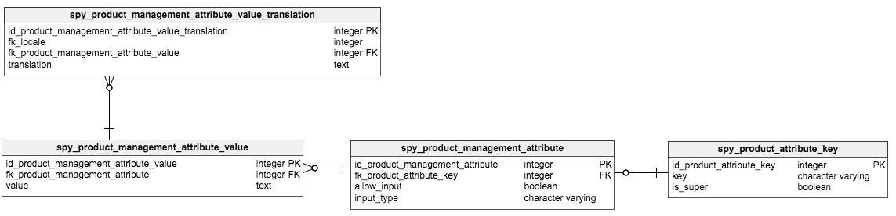

Product Attribute Management
Creating and managing product attributes is the first step in enriching your product data. It is an essential part of maintaining and improving the online shop for your customers. Attributes can serve different purposes and are therefore stored in different ways. They may be used not only for product management, but also to improve search and filter functionality in the shop.
Product Attribute Management
In Zed, product management attributes support creating and editing products. You can add keys for your attribute name and values, enabling the translation to different languages (localized). Multiple ways of handling translations are offered. The following examples highlight the use cases.
In the DB a key “attribute.weight” is saved. The key can now be translated into different languages via the glossary:
Key = attribute.weight
Value (en_EN) = Weight
Value (de_DE) = Gewicht
The attribute value “63.5 g” exists as a value-key and serves as a key and a value at the same time in the DB:
Value (non-localized)=63.5 g
What you see on the English version of the shop: Weight = 63.5 g
What you see on the German version of the shop: Gewicht = 63.5 g
In the DB a key “attribute.protection_feature” is saved. The key can be translated into different languages via the glossary:
Key = attribute.protection_feature
Value (en_EN) = Protection Feature
Value (de_DE) = Schutzfunktion
The attribute value “waterproof” is now translated, a non-localized value (as in Example 1) is not sufficient:
Value (en_EN) = Waterproof
Value (de_DE) = Wasserdicht
What you see on the English version of the shop:
Protection Feature = Waterproof
What you see on the German version of the shop:
Schutzfunktion = Wasserdicht
For this scenario there are two ways of doing it. One way (1) is to work with a non-localized attribute key for Germany and Ireland, and a localized key for the US, because (like in Example 1) two languages could share the same translation for the attribute. The other way (2) is to add localized attribute keys and values for each language.
(1)Non-Localized key and localized key for the US
In the DB a key “attribute.length” is saved for non-localized values and a localized key “attribute.length.us” for the translations in the metric system.
Key = attribute.length
Value (en_IE) = Length
Value (de_DE) = Länge
Key = attribute.length.us
Value (en_US) = Length
Now for each of the attribute keys we add the attribute values, which are 1.5 meter for the Ireland and Germany, and 4.92 feet for the US.
For the key “attribute.length” the value is:
Value = 1.5 meter
For the key “attribute.length.us” the value is:
Value = 4.92 feet
(2)Localized keys for US, DE and IE
In the DB three localized keys, namely “attribute.length.de”, “attribute.length.ie”, and “attribute.length.us” are saved.
Key = attribute.length.de
Value (de_DE) = Länge
Key = attribute.length.ie
Value (en_IE) = Length
Key = attribute.length.us
Value (en_US) = Length
Now for each of the attribute keys we add the attribute values.
For the key “attribute.length.de” the value is:
Value = 1.5 meter
For the key “attribute.length.ie” the value is:
Value = 1.5 meter
For the key “attribute.length.us” the value is:
Value = 4.92 feet
What you see on the Irish and German versions of the shop:
Length = 1.5 meter
Länge = 1.5 meter
What you see on the US version of the shop:
Length = 4.92 feet
Attributes in the PIM
Translations for the attribute values in the PIM are optional and users may add new values in the process of creating a new product in the PIM. The input type ranging from text input to numerical values can be defined upfront. Adding new attribute values in the product creation process can be disabled, thereby restricting the user to the predefined value. All attributes that appear in the attribute management are called declared attributes.
What are “declared” attributes?
Declared attributes are the attributes that can be used in the PIM. There are two ways of declaring an attribute. On the one hand, when you create a new attribute it is automatically declared and can then be used for creating products in the PIM. On the other hand, you may import products with existing attributes in JSON format. The imported attributes are displayed in the PIM, but cannot be edited. Only after adding the exact same attribute key to the list of attributes in the attribute management, it becomes available in the PIM.
What are super attributes?
The Spryker OS product data model allows for the creation of multiple variants of one product. For the shop to be able to differentiate between these variants some characteristic needs to differ between them. A super attribute must be added to every product variant in order to display multiple variants of an abstract product in the shop frontend (Unless there is only one variant, which makes the use of super attributes for differentiation purposes obsolete). Attributes become super attributes by marking them as such in the attribute management interface. Important to note is that the variants do not need to share the same super attributes in order to belong to the same abstract product. Here is are two examples:
(1) Abstract product X has concrete product A and B: A: Super attribute = (color:blue) B: Super attribute = (color:green)
(2) Abstract product Y has concrete products C and D: C: Super attribute = (color:red) D: Super attribute = (size: 45)
Super attributes in the Spryker OS Demoshop
In this example on the product detail page there will be the possibility to select either the attribute color or the attribute size. For a variant to be selectable, it should have a unique combination of values for its super attributes compared to the other variants from the same abstract product.
